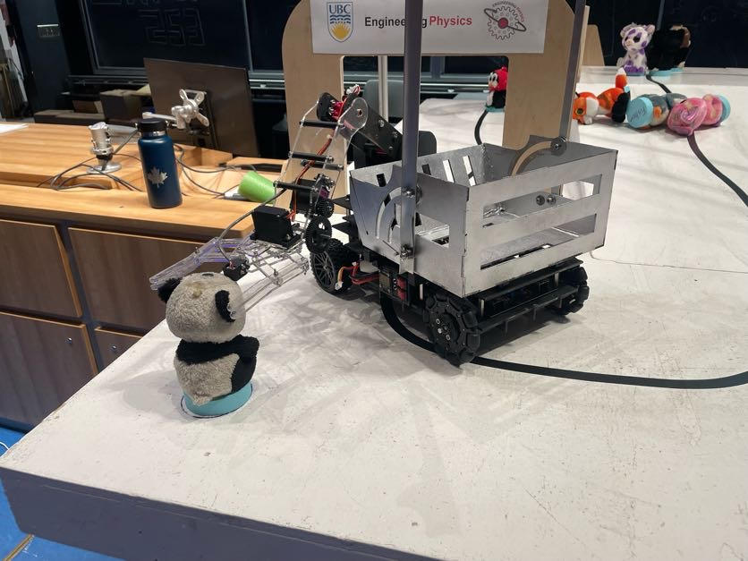
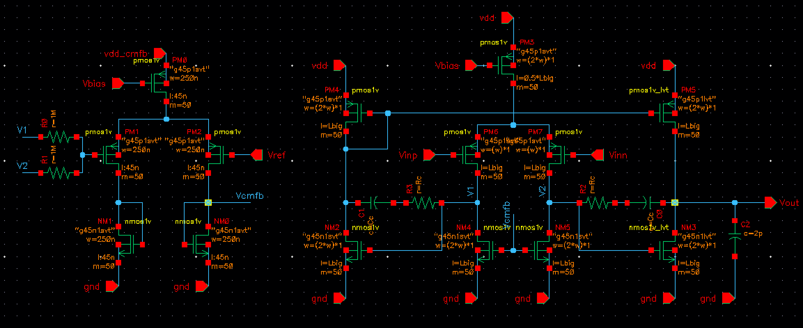
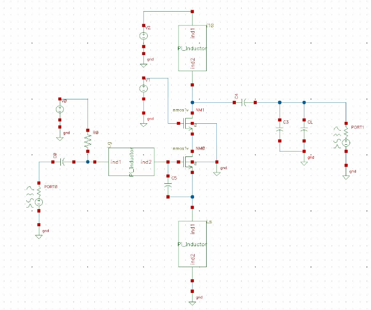

3rd Year Engineering Physics · University of British Columbia
jwei30@student.ubc.ca · 778-317-9780
Tools: KiCad, Altium, LTSpice, Onshape, MATLAB, Cadence Virtuoso
Programming Languages: C, C++, Java, Python
Lab: PCB design, soldering, oscilloscopes, network analyzer, 3D printing, machining
Autonomous stuffie detection and retrieval robot using ESP32 control, PID line following, magnet detection, and a fully custom KiCad PCB with motor, power, and sensor subsystems.

Two-stage differential-to-single-ended CMOS op-amp with CMFB and compensation, designed in a 45-nm Cadence Virtuoso

End-to-end RF LNA design in Cadence Virtuoso with inductive source degeneration and resonant load, meeting S-parameter, NF, IIP3, and low-power targets at 5.25 GHz.

Hosted on GitHub Pages · © Derek Wei